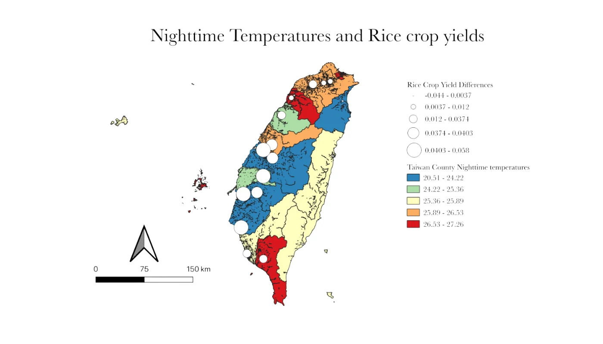

Farm visits
We went to local farms to learn how farmers recognize plant stress, manage their crops and decide when to step in. They asked for a system that is automated, accessible and compatible with the way they already work.

On this page
Climate change is pressing on agriculture: rising temperatures, soil salinization, drought and disease. A farmer does not meet a national average, though. They meet the conditions of their own field, so a response has to work field by field.
We mapped environmental and agricultural data across Taiwan to find out how much the pressure varies from one county to the next.

Biofertilizers, biostimulants and bioprotectants are alternatives to conventional agrochemicals. Delivering them affordably and reliably is the hard part, because four steps stand between a working molecule and a stressed plant.
The cost of the chain
Each step adds time and cost, and at the end of it the farmer still has to judge when the protectant should be applied.
Large commercial farms have the finance, the specialized equipment and the labour to carry that chain. Small-scale farms have less access to monitoring, to storage and to precise application.
The question we took on
For a small-scale farmer the question is not whether better technology exists, but whether it is affordable, accessible and easy enough to use in everyday farming.
Taiwan’s markets connect the food people buy with the farmers who grow it. Behind the stalls, something is going wrong: lettuce leaves are getting smaller, rice yields are falling, harvests are harder to protect. ReLEAF began with one question. How can a farmer answer plant stress before the damage is irreversible?
Our first design put the sensing in the cells. A DesK–DesR system would read a temperature change, open a stress-response pathway, and let engineered bacteria make protectants in the soil where the stress was. Consultations with professors and bioprocess experts closed that route: the bacteria could not be contained in open soil, and biological sensing gave us too little precision and control. Their feedback moved the sensing into hardware and the bacteria into a vessel.
Four steps run from a reading in the field to a protected plant: detect, activate, contain, deliver.
Electronic sensors watch temperature and salinity continuously. Our AIoT model reads those data, predicts plant stress, and turns on a green-light signal once conditions cross a damaging threshold.

Green light activates the CcaSR optogenetic system in engineered Bacillus subtilis, which then produces ACC deaminase, LEA14 or BoPep4. Each protectant works on a different mechanism of heat, salinity or biotic stress.

The engineered bacteria stay inside a hollow-fibre membrane bioreactor. The membrane passes the protectants into the delivery pathway and holds the cells back.

Hydroponic circulation or soil irrigation carries the released protectants to the plants.
What the four steps add up to
Protection arrives locally, at the time stress is predicted, and no engineered bacteria leave for the environment.
Farmers, researchers, industry experts and community members shaped the project throughout. Three kinds of visit changed it most.
We went to local farms to learn how farmers recognize plant stress, manage their crops and decide when to step in. They asked for a system that is automated, accessible and compatible with the way they already work.

A hydroponic farm and a plant-protectant company showed us the delivery systems that exist and the barriers biological products meet outside the laboratory. Their input set how ReLEAF connects to hydroponic circulation and irrigation.

We hosted a forum where farmers, company representatives and community members examined the bioreactor and traded views on it. What they said sharpened the accessibility, the safety and the field application of the design.
Every farmer with a small on-site biomanufacturing system. Protectants generated locally and on demand would cut the dependence on centralized manufacturing, long-distance transport and specialized storage, and shorten the path from a new biological discovery to the field: the protection a crop needs, where and when it needs it.
The design is modular. The same loop can carry other protein-based treatments and answer a wider range of agricultural stresses, which makes precise biological protection safer, faster to respond and easier to reach for the small-scale farms that existing agricultural technology underserves.
Leave the laboratory. We want to pilot the system with small-scale farmers and farm cooperatives and collect harder data on reliability, usability, plant response and operating cost. Those field results would tell us what to change before anything wider.
With field data and continued stakeholder feedback, we want to work with farmer collectives, research farms and agricultural organizations on practical models for distribution, maintenance and shared use, and to move toward commercialization without losing the farms the project was built for.